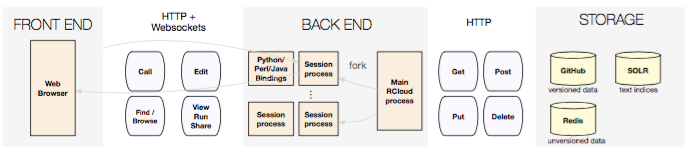
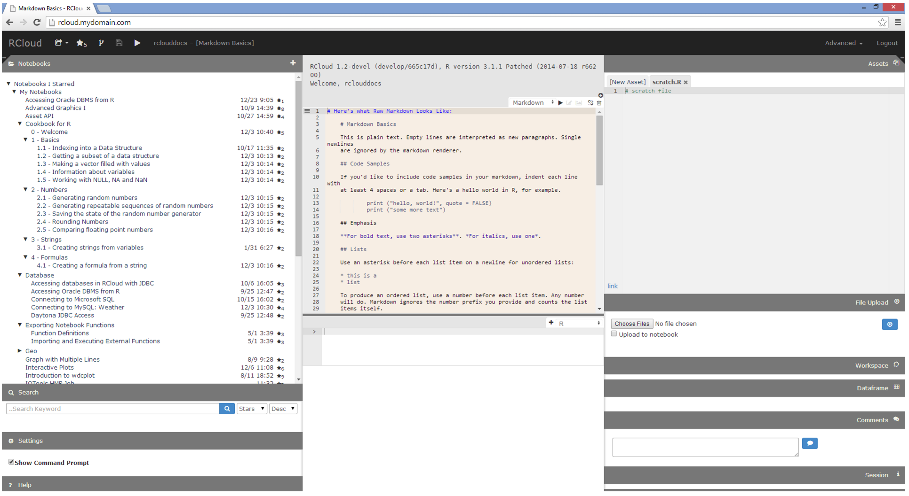

Documentation About

RCloud is open-source software developed primarily by Simon Urbanek and Gordon Woodhull of AT&T Research, and Carlos Scheidegger which generates an environment for collaboratively creating and sharing data analysis scripts. Much like Sage, Jupyter notebooks and Mathematica, RCloud provides a notebook interface that lets you easily generate a web-based session, annotate it with text, equations, and supporting images and share it with others; a notebook holds a sequence of cells, each of which is a snippet of code or hypertext in Markdown.
Unlike these other systems, RCloud:
- lets you easily browse other users's notebooks, comment on notebooks, fork notebooks, star notebooks, and use them as function calls in your own notebooks.
- provides an environment in which R packages can create rich HTML content (using, for example, d3 and dc.js), and
- provides a transparent, integrated version control system.
In essence, RCloud never forgets what you did. If you need low-level access to RCloud notebooks, you can simply clone the associated git repository. This is because RCloud notebooks are Github gists.
RCloud was created to solve the problem of the discontinuity of performing exploratory data analysis (EDA) using one set of tools, and automated reports and deployments with another. In addition, these environments often assume a single-developer perspective, while data scientist teams could get much benefit from easier sharing of scripts and data feeds, experiments, annotations, and automated recommendations, which are well beyond what traditional version control systems provide.In the RCloud environment, developers and scripters solve problems in data and visual analytics and create web applications and services  in a shared environment in which discoverability is a concern. RCloud supports search, annotation, recommendation, and commenting for all notebooks, and provides an overview where users can browse popular and recent analyses. When problems and data sources change frequently, deployment can become very costly; RCloud supports transparent and automatic deployment of analyses as web pages and web services, allowing a seamless transition from data exploration to production.
in a shared environment in which discoverability is a concern. RCloud supports search, annotation, recommendation, and commenting for all notebooks, and provides an overview where users can browse popular and recent analyses. When problems and data sources change frequently, deployment can become very costly; RCloud supports transparent and automatic deployment of analyses as web pages and web services, allowing a seamless transition from data exploration to production.
RCloud was specifically designed to leverage existing systems and standards, and so communication between most parts of the system happens through HTTP. As a result, some desirable features of RCloud become natural, such as native support for RCloud notebooks as web services. Every notebook in RCloud is named by a URL, and notebooks by default are visible in the entire organization. This is deliberate as broad access to analysis outputs increases long-term engagement in part through cross-references on the web. The main creation workflow involves editing notebooks, which are transparently stored as git repositories in GitHub, providing us with easy access to primitives for version tracking.
Notebooks can be executed one cell at a time in an interactive session, similar to traditional read-eval-print loops, or can all be executed concurrently, similar to running a shell script. One of the main contributions of RCloud is the notion that notebooks are “always deployed”. In other words, the most recent version of a notebook is immediately available to all other users of the system. Another way to describe this is that RCloud lacks a “save” button: any notebook cell that runs is always associated to a notebook version serialized to disk. Although this sometimes leads to an excessively fine-grained sequence of versions, losing information that could be shared is worse. In this design, we get notebooks that are always live, but sometimes broken. Because stability is important, we also allow any previous version of a notebook to be tagged and referenced.
One of the main contributions of RCloud is the notion that notebooks are “always deployed”. In other words, the most recent version of a notebook is immediately available to all other users of the system. Another way to describe this is that RCloud lacks a “save” button: any notebook cell that runs is always associated to a notebook version serialized to disk. Although this sometimes leads to an excessively fine-grained sequence of versions, losing information that could be shared is worse. In this design, we get notebooks that are always live, but sometimes broken. Because stability is important, we also allow any previous version of a notebook to be tagged and referenced.
RCloud is a step toward practical “DevOps for data science” and reproducible, publishable data science experiments. 
{kind=link}